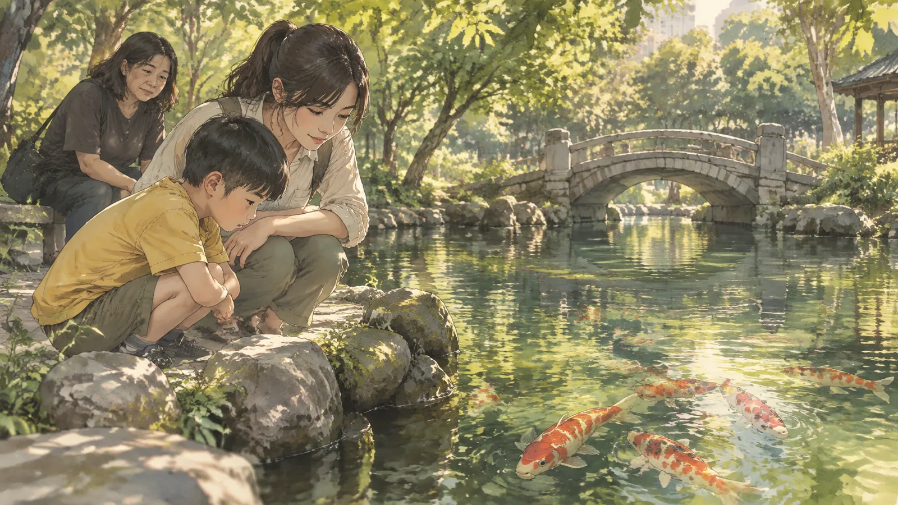
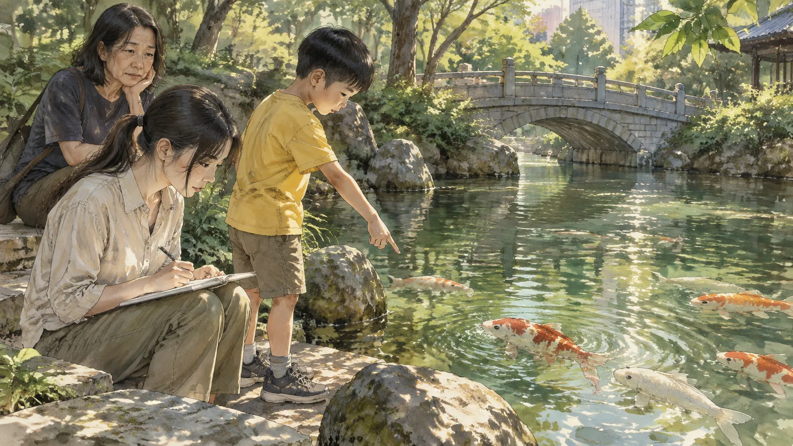
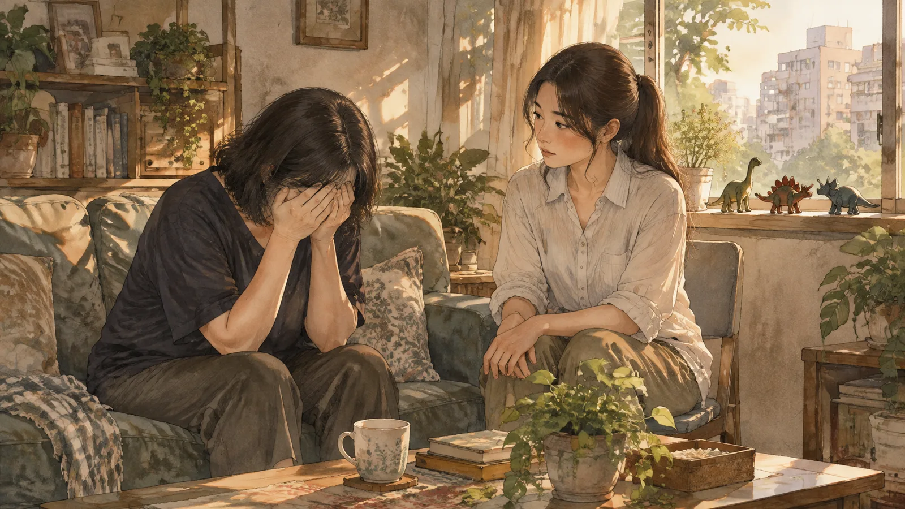
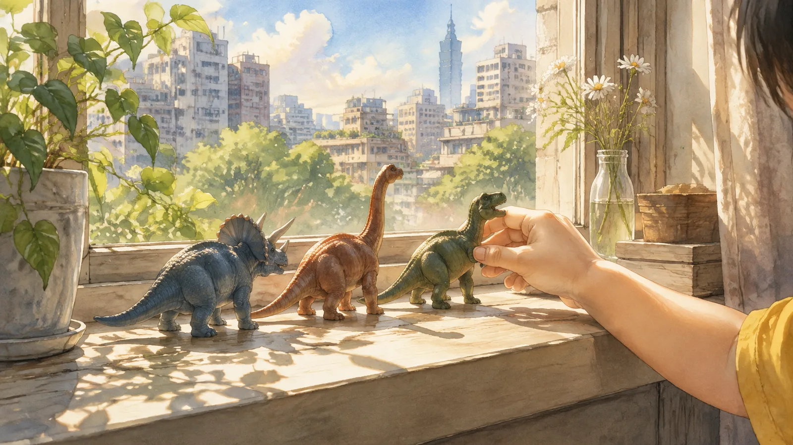
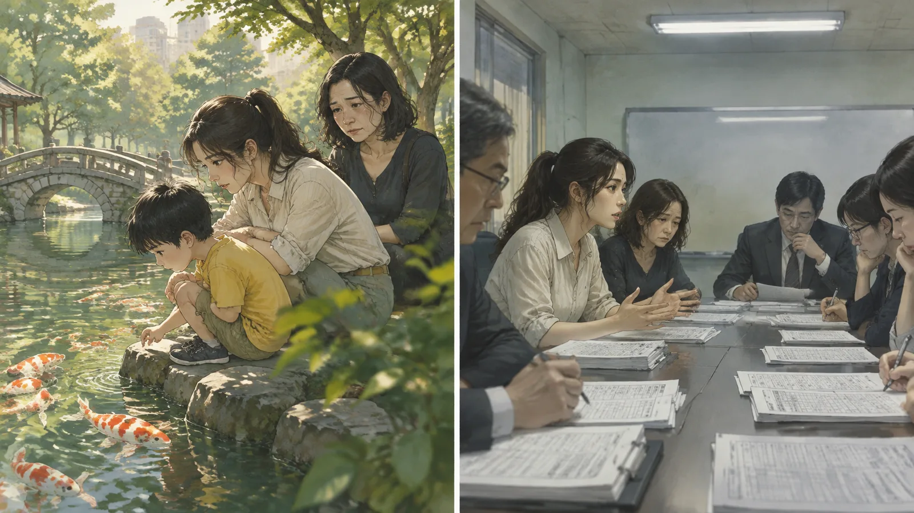
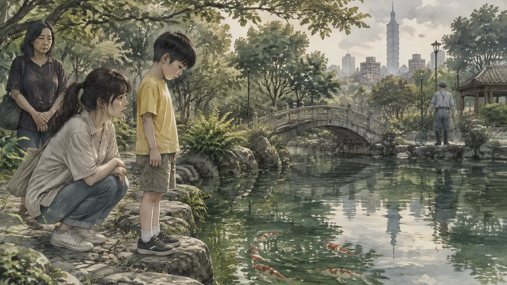
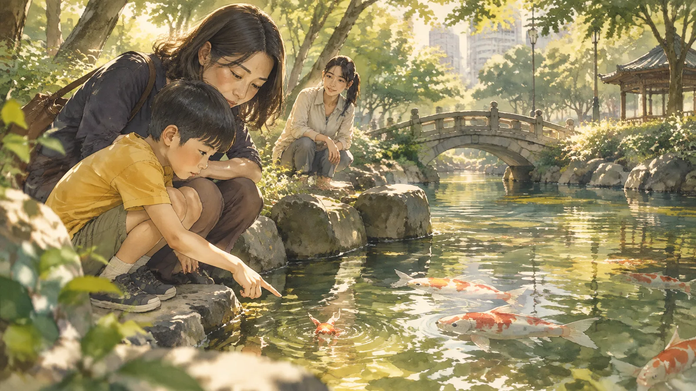

第一章魚
小遠說魚很快樂，是在四月的一個星期三。
那天下午，林芷帶他去公園。小遠九歲，自閉症，不太講話，講的時候通常是一些別人聽不懂的句子——「三點的光是綠的」，「電梯在想事情」。林芷是他的特教助理，陪了他兩年。她學會了不去問「這是什麼意思」，只是聽。
公園裡有一個池子，池子裡有魚。錦鯉，紅的白的，游得很慢。小遠蹲在池邊，看了很久。

然後他說：「魚很快樂。」
林芷蹲在他旁邊。「你怎麼知道？」
小遠沒有回答。他看著魚。
「你不是魚，」林芷說，不是質問，是好奇，「你怎麼知道魚快不快樂？」
小遠轉過頭，看著她。他很少看人的眼睛。可是那一刻他看了。
「妳不是我，」他說，「妳怎麼知道我不知道？」
林芷愣住了。
她大學念的是特教，可是她修過一門哲學課，通識的，一個老教授講先秦諸子。她記得那個老教授講過一段話。莊子和惠子在橋上，莊子說魚很快樂，惠子說你不是魚，你怎麼知道魚快樂，莊子說你不是我，你怎麼知道我不知道魚快樂。
兩千三百年前的對話。一個九歲的、不太講話的孩子，在一個台北的公園裡，把它講了一次。
小遠轉回去看魚。
「牠們在轉圈。」他說，「轉圈的時候是快樂的。」
第二章惠子
林芷回家以後查了那段話。
《莊子·秋水》。「莊子與惠子遊於濠梁之上。」她讀了很多次。她發現大部分的人讀完以後都站在莊子那邊——莊子贏了，惠子被駁倒了，這是一個關於「莊子很聰明」的故事。
可是她越讀越覺得惠子沒有輸。
惠子問的是一個真的問題：你怎麼知道別人的感覺？你不是魚。你不是別人。你在自己的身體裡，別人在別人的身體裡，中間隔著皮膚和骨頭和一整個世界。你可以看到別人在笑，可是你不知道那個笑的裡面是什麼。你只能猜。
莊子的回答是一個漂亮的翻轉，可是不是一個答案。「你怎麼知道我不知道」——這句話證明的只是惠子也不知道莊子知不知道。兩個人都不知道對方知不知道。這不是解決問題，是把問題變成兩倍。
林芷把書合上。
她想起她做特教助理的兩年。想起每一次寫報告，每一次填評估表，「情緒狀態：平穩」、「社交互動：低」、「對指令的反應：延遲」。她在描述小遠。她從來不知道小遠裡面是什麼。她只是站在橋上，看著他，猜。
她是惠子。
第三章橋上
之後的幾個星期，她開始在公園做一件事。
不是教小遠什麼。是問。她蹲在池邊，跟他一起看魚，然後問：「那條紅的，牠現在怎麼樣？」
小遠會看很久，然後說。「牠在等。」「牠不喜歡那條白的。」「牠累了。」有時候他不說，只是搖頭，意思是他不知道，或者他不想說。
林芷記下來。不是寫在評估表上，是寫在自己的筆記本裡。她不知道這些話對不對——她不是魚，也不是小遠。可是她發現一件事：小遠說的話，都是「可以看的」。牠在等——那條魚確實停在一個地方，不動。牠不喜歡那條白的——那條紅的確實每次白的靠近就游開。牠累了——那條魚確實游得比早上慢。

小遠不是在猜。他是在看。他看到的東西，林芷也看得到，只是她沒有看。她看魚的時候，看到的是「魚」——一個類別，一個東西。小遠看到的是這一條，現在，在做什麼。
「你怎麼看的？」她問他。
小遠想了很久。
「不要想牠是魚。」他說。
第四章母親
小遠的媽媽叫阿慧，四十二歲，一個人帶他。
她跟林芷講過很多次同一件事：「我不知道他在想什麼。」她講的時候不是抱怨，是害怕。她說她每天看著他，看了九年，她不知道他快不快樂，不知道他知不知道她愛他，不知道他有沒有一個「裡面」——「我知道這樣講很可怕，」她說，「可是有時候我覺得他是空的。他在那裡，可是沒有人在家。」
林芷把公園的事告訴她。魚，莊子，惠子。
阿慧聽完，很久沒有講話。
「他說魚很快樂？」
「對。」
「他說——妳不是我，妳怎麼知道我不知道？」
「對。」
阿慧哭了。她哭了很久，林芷坐在旁邊，沒有碰她。

「我一直在問他快不快樂。」阿慧說，「每天。他從來不回答。我以為他不懂這個問題。我以為他沒有這個東西。」
「他有。」林芷說，「他只是不用妳的方式說。」
「那他用什麼方式？」
林芷想了一下。
「妳不是他，」她說，「可是妳可以看。像他看魚那樣。不要想他是自閉症。看他現在在做什麼。」
第五章看
阿慧開始看。
她跟林芷說了。她說她以前看小遠的時候，眼睛在看，可是腦子在想別的——在想他為什麼不講話，在想他這樣以後怎麼辦，在想別人的小孩。她說她試著不想。只是看。
她看到小遠每天早上會把三隻玩具恐龍排在窗台上，面對太陽。她以前以為那是「重複行為」，評估表上有這一格。可是她看了一個星期，發現他排的順序每天不一樣，跟天氣有關。晴天是綠的在前面。陰天是灰的。她不知道為什麼。可是她知道那不是「重複」。那是一件事。

她看到他吃飯的時候會把飯和菜分開，可是有一天她煮了咖哩，他沒有分。他把咖哩和飯攪在一起，吃得很快。她問他，他說：「咖哩是一個東西。」
她看到他晚上睡覺前會把手放在牆上，放三秒鐘。她問他為什麼。他說：「跟房子說晚安。」
阿慧跟林芷講這些的時候，聲音在抖。
「他有一個裡面。」她說，「很大的。我以前看不到。」
「妳現在看到了？」
「一點點。」阿慧說，「像從橋上看水裡。看得到，可是隔著水。」
「莊子也是隔著水。」林芷說。
第六章評估表
六月初，學校開了一次會。
特教組長、班導師、輔導老師、林芷，還有一個從教育局來的人。桌上是小遠的資料，一疊，每一頁都有格子，每一格都有分數。

「情緒辨識，二分。」組長念，「社交互動，一分。指令反應，二分。整體評估：低功能。」
林芷說：「他可以從魚的游法看出魚的狀態。」
會議室安靜了幾秒。
「林老師，」教育局的人說，語氣很客氣，「我們沒有『魚』這一項。」
「我知道。可是——」
「評估表是全國統一的。」組長說，「我們要用可以比較的東西。魚不能比較。」
林芷看著那疊資料。她想起小遠說：不要想牠是魚。她想，這些人在看小遠的時候，看到的是「自閉症」，是一個類別，一個東西。他們沒有看到這一個，現在，在做什麼。他們是惠子，可是他們連橋都沒有站上去。
「那我們要怎麼知道他有沒有『裡面』？」她問。
「什麼裡面？」
「他快不快樂。他懂不懂別人。他有沒有——」她找不到字，「有沒有一個人在家。」
教育局的人翻了翻資料。
「這個表上沒有這一格。」他說。
林芷沒有再說話。會議結束，分數照舊。她走出會議室，走到操場，坐在司令台的階梯上，坐了很久。
她想，惠子問的問題，其實是一個很好的問題。你怎麼知道別人的感覺？你不知道。你只能看。可是看是要花時間的，是要蹲在池邊、一個下午、一個星期、一年的。評估表不花時間。評估表只要三十分鐘。
所以評估表永遠不會知道魚快不快樂。
她站起來，去接小遠放學。他們去公園。她蹲在池邊，跟他一起看。
第七章魚不快樂
六月，池子裡的魚死了一條。
是那條紅的。小遠最常看的那一條。牠浮在水面上，翻著肚子，白色的。公園的管理員用網子撈走了。
小遠站在池邊，看了很久。他沒有哭。他很少哭。

「牠不快樂了。」他說。
林芷蹲在他旁邊。
「你怎麼知道？」她問。這次不是好奇，是她真的想知道——一條死掉的魚，還有快樂不快樂嗎？
小遠看著水面。那裡現在什麼都沒有。
「牠不轉圈了。」他說。
林芷沒有說話。她看著小遠的側臉。他的眼睛很平靜，可是他的手在抖，很輕，像他每天晚上放在牆上的那三秒鐘。
她忽然明白了一件事。
小遠說魚快樂，不是因為他「知道」——不是惠子說的那種知道，不是進到魚的裡面去確認。他說魚快樂，是因為他看到魚在轉圈，而他知道轉圈是什麼。他在自己的身體裡，魚在魚的身體裡，可是「轉圈」是他們共有的。他看到魚在做一件他也會做的事，他就知道了。
不是知道魚的裡面。是知道那件事。
莊子在橋上，惠子問他你怎麼知道，莊子說「我知之濠上也」——我是在橋上知道的。以前林芷覺得這是狡辯。現在她覺得，那是唯一誠實的答案。我不在魚裡面。我在橋上。我在橋上看到了。我知道的就是我看到的。
不多。可是不是沒有。
「小遠，」她說，「你難過嗎？」
小遠想了很久。
「我不轉圈了。」他說。
尾聲
七月，林芷寫了一份報告。
不是評估表。是給學校的一份東西，關於小遠，關於「情緒辨識能力」。學校要她評估小遠能不能辨識別人的情緒，這是特教計畫的一個項目。標準的做法是給他看一些臉的圖片，問他這個人是高興還是生氣。小遠做這個測驗做得很差。
林芷在報告裡寫：
「小遠無法從圖片辨識情緒。但他能從一條魚的游泳方式判斷牠的狀態，準確度高於我。他不是用『辨識』的方式知道，他是用『看』的。他看的不是表情，是行為，而且是這一個、此刻的行為。」
「我建議不要再用圖片測他。我建議帶他去看魚。」
「另外，我想在報告裡記錄一段對話。四月的一個星期三，他說魚很快樂，我問他怎麼知道，他說：妳不是我，妳怎麼知道我不知道。這段話有兩千三百年的歷史。他不知道。他只是在池邊，看到了。」
學校沒有採納她的建議。評估表還是評估表。
可是阿慧採納了。她每個星期帶小遠去公園兩次。池子裡有了新的魚，一條紅的，比之前那條小。小遠看了很久，然後說：「牠還不會轉圈。」

「那牠快樂嗎？」阿慧問。
小遠看著她。他很少看人的眼睛。可是那一刻他看了。
「妳看。」他說。
阿慧看了。她蹲在池邊，跟兒子一起，看一條小魚在水裡試著游。她不知道魚快不快樂。她不在魚裡面。
可是她在橋上。
（完）
留言板
看不懂、想補充、發現錯誤都歡迎留言；填個暱稱就能發。